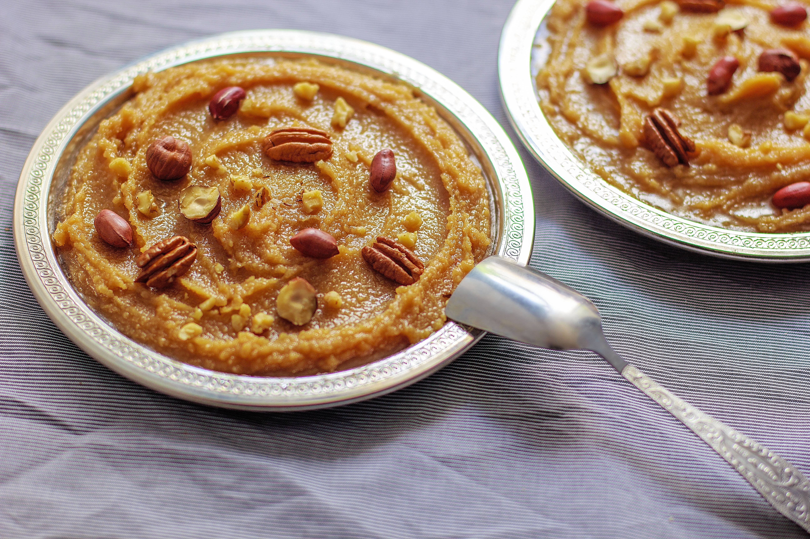

"Sweet, buttery semolina pudding infused with aromatic cardamom and crunchy nuts."

Ingredients:
This recipe uses a simple, easily scaleable 1:1:1 ratio for the core Ingredients:
1/2 cup Semolina (preferably fine grain)
1/2 cup Sugar
1/2 cup clarified butter (Ghee)
2 cups of milk and water mixture (Use all water, or a 1:1 mix of milk and water for a creamier texture)
1/4 tsp Cardamom powder
Optional: 1tbsp chopped cashews, almonds, raisins and a pinch of saffron strands.
Instructions:
Prepare the Liquid Base: In a small saucepan, combine the water/milk and sugar. Bring it to a gentle simmer on medium heat until the sugar dissolves completely. Stir in the cardamom powder and saffron (if using). Turn the heat to low to keep it warm.
Fry the Nuts: Melt 1 tablespoon of the ghee in a separate wide pan over medium-low heat. Fry your cashews and almonds until lightly golden, then add raisins for the last 30 seconds until they plump up. Remove the nuts/raisins from the pan and set aside.
Roast the Semolina Properly (If the semolina isn't roasted well, it won't absorb the liquids properly.): Pour the remaining ghee into the same pan. Add the semolina and stir continuously over medium-low heat. Roast for 5 to 7 minutes. It is ready when it turns a beautiful light golden color and releases a distinct nutty aroma. Do not let it burn.
Combine with Care: Turn the heat to low. Very slowly pour the warm sugar solution into the roasted semolina while whisking or stirring continuously. Be careful, as the mixture will bubble and splutter dramatically at first.
Simmer to Perfection: Cook for 3 to 5 minutes, stirring constantly. The semolina will quickly absorb the liquid, puff up, and thicken. Turn off the stove when it is slightly looser than your desired final consistency.
Garnish and Serve: Once the mixture easily leaves the sides of the pan and achieves a soft pudding texture, stir in the fried nuts and raisins. Remove from heat and serve warm.